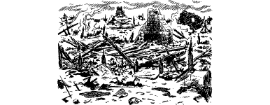

23
Schera wakes you shortly before dawn and wearily you rise from your makeshift bed. Mindful of the journey ahead, you make a brief search of the armoury and discover a few weapons, and other items which could prove useful:
- 6 Arrows
- Quiver
- Dagger
- Sword
- Spear
If you wish to keep any of these items, remember to adjust your Action Chart accordingly.
The captain sends word to his men to find boats for the voyage downstream. The order is duly carried out and, within the hour, twenty small craft have been brought to the icy river on the west side of the stone bridge. Schera appoints ten men to each craft; then you and he step aboard the first boat, cast off, and begin a voyage that will take you towards the coastal city of Darke.
The current is strong and the river is free of obstructions, enabling your flotilla to make swift progress downstream. Much of the river bank is lightly wooded and Schera commands everyone to remain vigilant in case there are Drakkarim among the trees, lying in ambush. You pass through the woods without incident, and shortly before noon, you see the ruined town of Odnenga in the distance. Every building has been razed to the ground and a pall of wood smoke hangs above the town, fed by fires still smouldering from a battle that took place here several days ago. The river here is blocked by debris and you are forced to put ashore. Schera’s men set to work clearing a passage, while you and the captain scout the ruins in search of information.
{kind=link}

A soot-blackened road, running east to west, divides this shattered town into two halves. Schera suggests that you split up and search one half each and you nod in agreement.
If you wish to search the north side of this ruined town, turn to 2.
If you choose to search the south side, turn to 296.